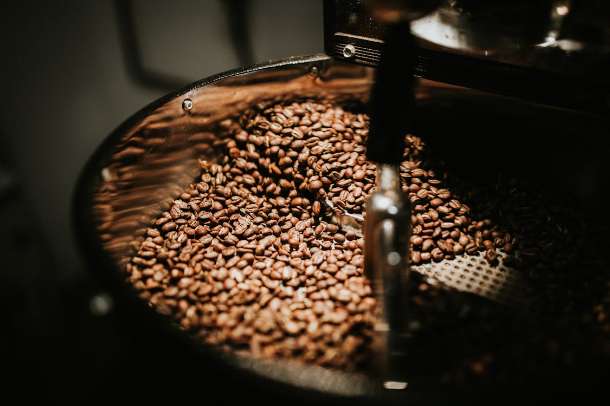
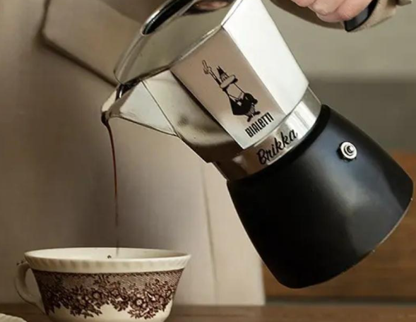

手冲咖啡 V60 指南
01
研磨与准备
称取15g咖啡豆，研磨至中细程度（类似白砂糖粗细）。折叠滤纸放入滤杯，用热水润湿滤纸并温热分享壶。
02
闷蒸 (Blooming)
注入30g热水（约90-93℃），确保所有咖啡粉湿润。静置30秒，观察粉层膨胀，这是释放二氧化碳的过程。
03
注水萃取
缓慢绕圈注水至150g，稍作停顿；再次注水至225g（粉水比1:15）。总萃取时间控制在2分15秒左右。
04
摇匀享用
移走滤杯，轻轻摇晃分享壶使咖啡液混合均匀。倒入温热过的杯中，感受温度变化带来的风味层次。
必备器具清单

手摇磨豆机
磨豆机是投资优先级最高的设备。均匀的研磨度是好咖啡的基础。推荐采用金属磨芯的产品，切削力更强，细粉更少。

摩卡壶 / 法压壶
如果是喜欢浓郁口感的同学，摩卡壶是不错的选择。而法压壶则是最简单的器具，也是制作冷萃咖啡（Cold Brew）的利器。